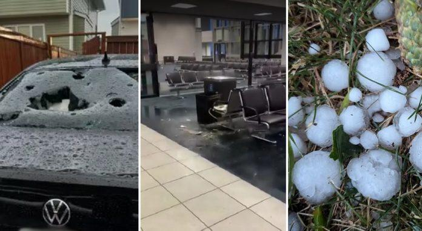
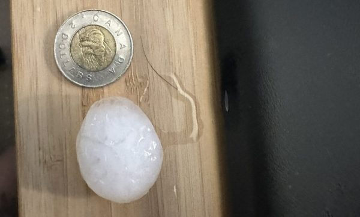

冰雹和暴风雨突袭阿省卡尔加里，国际机场大堂严重水浸，旅客一度滞留及不知所措。市内多处道路被淹浸，不少停泊在户外的车辆被落下的冰雹打碎挡风玻璃。
卡尔加里国际机场昨晚（5日）变了水塘，冰雹落下而发出的“嗒嗒”声回音，响彻机场大堂，部分区域还有更令人不安的流水声。天花板不断渗水有如瀑布，有瓦片从天花坠下，落在地上的积水中。
机场内陆线大堂的部分区域于周二仍处于关闭状态，但机管局表示仍有其他登机口在运作及为航班服务。
机管局在社交媒体上发文称：“我们明白到此次天气事件对旅客和本局的合作伙伴造成的影响，我们正与合作伙伴密切合作，以作应变及将事件的影响降到最低。我们将继续评估损毁，并感谢各位在我们进行调整时保持耐心和合作，也衷心感谢迅速作出反应，以确保受影响地区撤离工作顺利进行的人员。”
据加通社报道，有在场旅客估计当时有约100人站在机场大堂不知所措，火警”警报一度响起，旅客都在猜想是否需要撤离。大约半小时后，他们才首次获得机场人员的指示，但即使如此，当向站在一旁的职员查询时，得到的回复往往是“不知道”。
一名旅客表示，她要自掏腰包入住酒店，等待周二晚上乘搭航班回家。
加拿大环境部于周一晚上向阿省中南部部分地区发出严重雷暴警报，警告将会出现强烈阵风、棒球般大小的冰雹，以及暴雨。

plutopia81/IG)
业余气象观察者肯尼迪（Brittany Kennedy）表示，在卡尔加里西北的Cochrane，目睹房屋受损毁，汽车被撞凹，车窗碎裂，道路上积水如湖，有些冰雹的体积较高尔夫球还大。
肯尼迪指这是她见过的最大三个暴风雨之一，并估计会导致一些车祸。“因为一旦在有冰雹的道路上驾驶，就如在冰面上那样。如果不减慢车速，就会失去控制。”
Here is North East Calgary hail approximately 10 minutes ago. pic.twitter.com/9ISVkCdmIc
— Ekrem Sahin (@derkenarji) August 6, 2024
图：CBC
V20